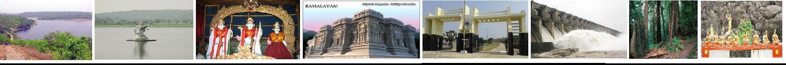

Induru Information
Induru Information Nizamabad – A popular princely district in Telangana situated at a distance of about 175 kms from North-west of Hyderabad. The District derived its name as Nizamabad (Nizam-a-abadi) from the Nizam of Hyderabad Asaf Jahi, VI who had ruled Deccan during the 18th Century A.D. Originally the district called was INDUR known to have originated in the name of king Indradatta who had ruled this region during 5th Century A.D. During the Prime Minister-ship of Sir Salar Jung-I in the 1876 A.D, the district is in the Nizam’s Dominion were re-organized where upon INDUR became a District. Up to 2nd June-2014 the Nizamabad district was part of Andhra Pradesh State. After bifurcation of Telangana State Nizamabad district became one of the districts of Telangana State. The District derived its name as Nizamabad (Nizam-a-abadi) from the Nizam of Hyderabad Asaf jahi, VI who had ruled Deccan during the 18th century A.D. Originally the District was called Indur known to have originated in the name of king Indradatta who had ruled this region during the 5th century A.D. Some of the major ancient dynasties which extended their rule to the district are Mauryas, Satavahanas, Rastrakutas, Chalukyas and Kakatiyas and in the medieval Bahamani Sultans, Qutub Shahis and Barid Shahis and in the modern period Mughals and Asaf Jahis. During the Prime Minister-ship of Sir Salar Jung-I in the 1876 A.D., the districts in the Nizam’s Dominion were re- organized where upon Indur became a District. The district in its new shape was christened as Nizamabad. Before 1979, there were (7) taluks in the district. However, during December, 1979 Armoor and Kamareddy taluks have been bifurcated and (2) new taluks Viz, Bheemgal and Domakonda were formed. With these two taluks, the number of taluks rose from 7 to 9. During May, 1985 (35) Mandals have been formed as smaller administrative units in the district. They are listed under the head ‘Administrative Divisions’. During August 1988, Yedapally Mandal was newly formed, bringing the total number of Mandals to 36, total no of divisions are 3. New District is formed with 29 mandals.there are I corporation two municipalities in the district.recently 10 new Mandal are formed they are Mupkal,Mendora,Yergatla, Nizamabad North, Nizamabad Rural , Nizamabad South Mugpal,Rudrur, Chandur,Mosra . Nizamabad town has the largest population of 3.10 lakhs as per 2011 Census. While Armoor town has the lowest population of 64,042. Nizamabad town has become Municipal Corporation in March, 2005 and Armoor town has become Municipality in May 2006. There are total no of thandas in district are —-, no of thandas are to be proposed as Grama Panchayaths are —– Nizamabad district is bounded on the North by Nirmal district and on the East by Jagital district, on the South by Kamareddy district on the West by Nanded district of Maharastra State The geographical area of this district is 4288 Sq.Kms. The district lies between 180 05’ and 190’ of the Northern latitudes and 770 40’ and 780 37’ of the Eastern longitudes.
